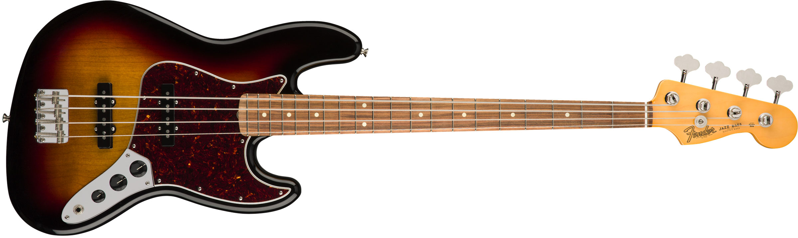
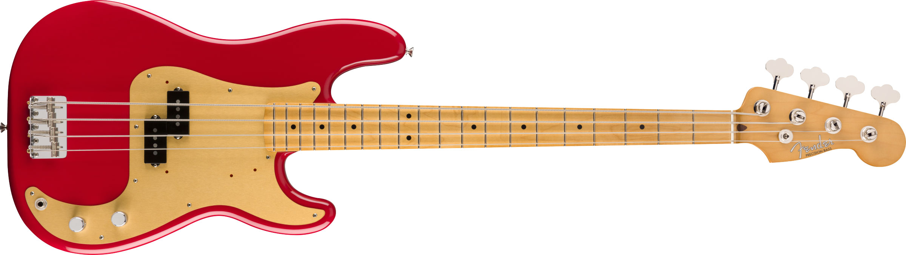
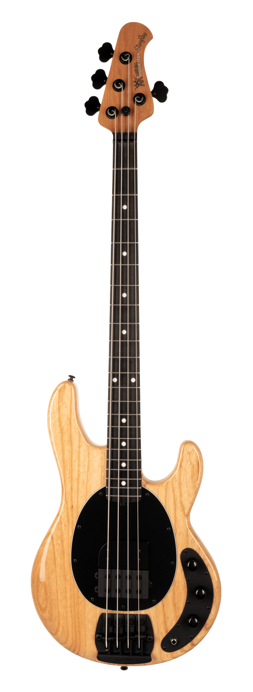

|  |  |  |
| Especificações Técnicas: - Corpo em alder - Braço em maple em "C" shape - Escala em pau ferro com 34" (864 mm) - Escala com raio de 7.25" (184.1 mm) - 20 trastes vintage - Largura do nut 1.5" (38.1 mm) - Tarraxas Fender® American Vintage Reverse (abertas) - Ponte Fender® American Vintage (4 saddles) - Ferragem cromada - 2 captadores Standard Vintage Alnico Magnet Single-Coil Jazz Bass - Controles de V/V/MT - Escudo sanduíche tortoise (4 ply) - Encordoamento Fender® USA Bass 7250ML, NPS, (.045-.100) - Acompanha Case de tweed | Especificações Técnicas: - Corpo em alder - Braço em maple Vintage "C" shape - Escala em maple com 34" (864 mm) - Escala com raio de 7.25" (184.1 mm) - 20 trastes vintage - Largura do nut 1.75" (44.45 mm) - Tarraxas Fender® American Vintage Reverse (abertas) - Ponte Fender® American Vintage (4 saddles) - Ferragem cromada - 1 captador estilo Vintage Split Single-Coil '50s Precision Bass - Controles de MV/MT - Escudo em alumínio anodizado (1 ply) - Encordoamento Fender® USA Bass 7250M (.045-.105) - Deluxe Gig Bag | Especificações Técnicas: - Corpo em Ash - Acabamento do corpo em High Gloss Polyester - Ponte String-Through Music Man cromada e ajuste de Mute - 21 trastes - Braço em Maple figurado - Escala em Maple - Acabamento do braço em High-Gloss - Tarraxas Schaller BM - Truss rod ajustável - Encaixe do braço com 6 parafusos - Controles: preamp ativo de 2 bandas; Volume, Treble, Bass - 1 captador Humbucker Standard – Music Man com magnetismo de Alnico |